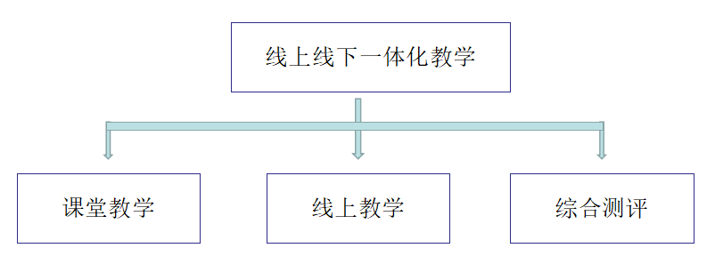

教学体系
实验教学方法
本项目将先进的虚拟仿真技术融入到教学项目的设计与开发中，是网络化、数字化时代教学模式与教学内容跟随科技发展的创新型教学尝试。通过与传统教学内容相结合，搭建全新的线上线下教学一体化教学体系，旨在让学生能够通过课上学习、虚拟体验式实训、综合测评等教学方法与教学手段，最终达到对相关灯具设计与照明设计课程的学习与掌握，并最终取得可评价的教学成果。

线上线下教学一体化教学
课上学习
虚拟体验式实训
综合测评
本实验重点培训和考核学生在商业空间中灯光照明氛围的设计能力。本项目虚拟实现了课程中可以实训的照明环境和设备，解决了进行照明设计更换场景所需要高昂成本、时空受限的问题。在虚拟实训教学过程中使学生可以在沉浸式三维环境中体验和学习照明知识，并进行设计检验。这种教学方式可极大提高学生的参与感，增强学生自主学习的积极性，激发学生的设计想象力与创造力，是的学生从感知层面理解教师讲授的理论知识。
1、使用目的
线上线下一体化教学体系带来了教学方式上的改变，通过充分发挥传统教学与虚拟仿真实验教学相结合的优势，在教学过程中形成相互促进的合力，完成教学内容的延伸与拓展。
课堂学习：
课堂由老师带领大家学习商业空间照明设计理论知识，老师讲解教学内容，指导学生思考、讨论与研习理论，学生课内吸收和学习丰富的专业知识并形成概念理解。只有通过课上的理论学习打下良好的基础，才能在课外的实训中做到有章可循。
虚拟体验式实训：
借助虚拟仿真技术，构建立体的、可供学生自由设计的空间，每个学生都可以自主选择感兴趣的商业空间，营造不同环境下不同氛围的灯光效果。这种思考、互动、设计与实践相互作用的虚拟体验式实训方式可提高学习兴趣，激发学生自主设计与创造的积极性，培养学生整体灯光氛围设计的艺术感受力，使得理论学习转化为亲身设计的感受，触发学生从实践中总结经验，培养理论结合实际的实践能力。
综合测评：
教师作为学生的辅导者，在整个教学过程中，从课堂学习过程到虚拟体验式实训过程中不断帮助学生完善知识体系，形成自己的实践应用能力。课上对专业性知识进行梳理与传授，并跟踪每一个学生的学习进度。课外通过实践课程对学生的设计作品进行知识性、应用性、设计性、以及综合性评价，达到线上线下综合测评的教学目标。
2、实施过程
本项目在线上线下一体化教学体系中主要起到“虚实互补”的作用，通过虚拟仿真实验教学项目的建设，为学生具体的实操训练创造以下实施条件：
（1）自主式学习：学生课外的虚拟实训操作可以作为一个自学自测的过程，根据课堂上学习到的理论知识，学生在进入实训场景后，对商业空间照明设计知识进行进一步线上自主学习，其中包括照明理念和照明气氛的学习。
（2）自由交互实训：项目通过实验式交互流程将商业空间照明氛围设计过程完整体现，学生通过在VR中的手柄交互或者Web端的键鼠交互手段，在整个实验过程中按照实验步骤进行交互式操作。这种动手操作的方式形成每个学生不同的操作选择，并直接形成不同的设计方案与设计结果。在每一步交互步骤里，学生可以直观的体验到步骤中自主交互选择所呈现的灯光设计效果，充分发挥了虚拟仿真实验空间中的体验式优势。
（3）系统考核：通过对专业知识的梳理，系统中对可量化的考核指标与交互步骤进行科学性的考核评价体系的设计，并在实训与交互过程中记录下相关考核数据，最终形成系统考核成绩与实验报告，并在实验结束时在系统中呈现，对学生学习形成指导。
同时，考核成绩还会自动上传至学生成绩管理平台，便于教师掌握学生对本项目的学习情况。学生设计的效果图也可最终保留在程序中，教师和学生可以通过线下讨论、学习的方式对设计作品进行“师生评价” 或“生生评价”。
3、实施效果
通过虚拟仿真实验教学项目的使用，给学生提供了更加科技化的学习工具，在激发学生学习兴趣、提升学生自主性学习方面取得了一定的成效。同时通过交互性、体验性的实践教学方式加强了学生的实操与实践能力，并提高了学生的艺术设计能力。
在考核学生实际设计水平的综合测评中，本项目也起到了一定的指导性与参考性作用，“虚实结合”后的学习效果得到显著提高。